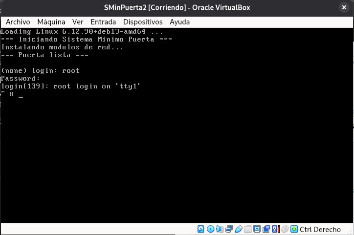
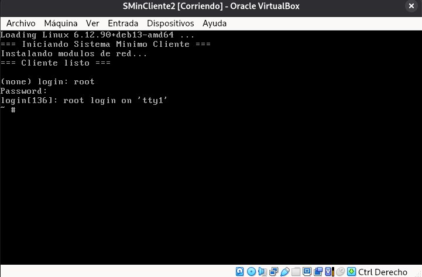
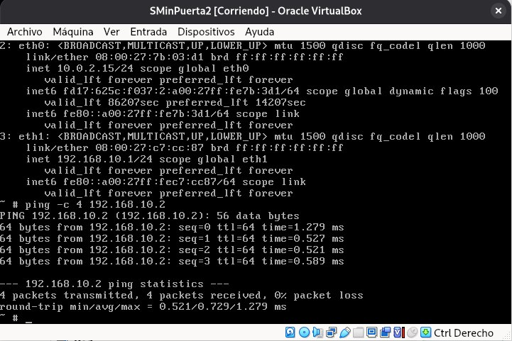
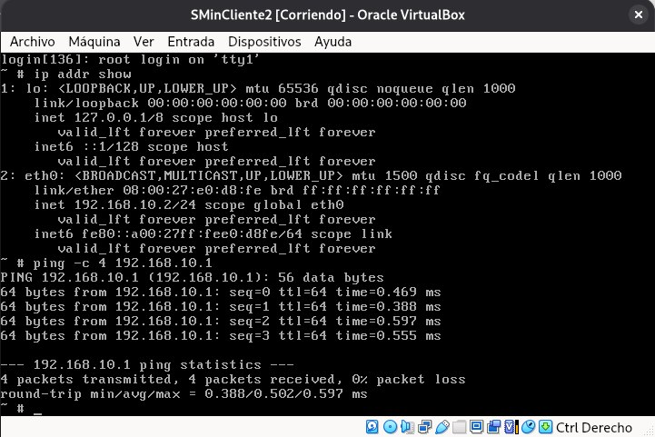
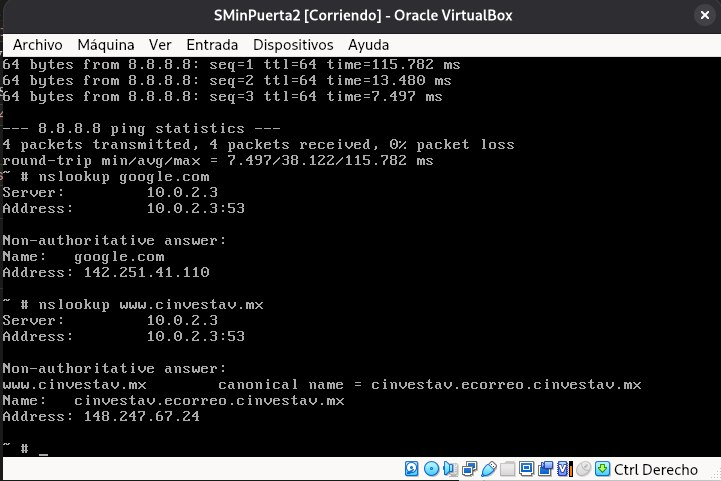

Esta tarea extiende el trabajo de la Tarea 1 —donde se construyó una imagen ISO arrancable con el kernel de Linux— incorporando un sistema de archivos raíz completo (initrd) empaquetado como imagen CPIO. Se construyen dos sistemas mínimos independientes: una Puerta que actúa como gateway NAT con dos tarjetas de red, y un Cliente conectado a la red interna privada.
El objetivo central es comprender la configuración de red a bajo nivel en Linux: carga de módulos de kernel, asignación de direcciones IP, enrutamiento y reenvío de paquetes (IP forwarding). Todo ello sin apoyarse en ninguna distribución preexistente ni en herramientas de configuración automática.
El sistema anfitrión es Debian 13 (Trixie) con kernel 6.12.90+deb13-amd64. Se utiliza BusyBox v1.38.0 como userspace mínimo y módulos virtio para las tarjetas de red paravirtualizadas de VirtualBox.
| Parámetro | Valor |
|---|---|
| Sistema operativo anfitrión | Debian 13 (Trixie) — arquitectura x86_64 |
| Versión del kernel | 6.12.90+deb13-amd64 |
| Ruta de trabajo | /home/moises-sanchez/Documentos/Seguridad_5 |
| Herramienta de virtualización | Oracle VirtualBox |
| Userspace | BusyBox v1.38.0 (dinámico) |
| Adaptadores de red | Red paravirtualizada (virtio-net) |
La topología consiste en dos máquinas virtuales comunicadas a través de una red interna de VirtualBox. La Puerta actúa como intermediario entre Internet (NAT) y la red privada donde reside el Cliente.
| Máquina | Interfaz | Dirección IP | Función |
|---|---|---|---|
| Puerta | eth0 | 10.0.2.15/24 | NAT — acceso a Internet vía VirtualBox |
| Puerta | eth1 | 192.168.10.1/24 | Gateway de la red interna |
| Cliente | eth0 | 192.168.10.2/24 | Única interfaz, red interna |
| DNS Puerta | — | 10.0.2.3 | Servidor DNS del NAT de VirtualBox |
| DNS Cliente | — | 192.168.10.1 | La Puerta reenvía las consultas DNS |
Se instalan los paquetes necesarios en el sistema anfitrión para compilar BusyBox y generar las imágenes ISO arrancables:
sudo apt update
sudo apt install grub-pc-bin xorriso build-essential libncurses-dev opensslSe crean los directorios base para ambos sistemas mínimos:
mkdir -p SMinPuerta/dev
mkdir -p SMinPuerta/etc
mkdir -p SMinPuerta/proc
mkdir -p SMinPuerta/sys
mkdir -p SMinPuerta/tmp
mkdir -p SMinPuerta/mnt
mkdir -p SMinPuerta/lib64
mkdir -p SMinPuerta/lib/x86_64-linux-gnu
mkdir -p SMinPuerta/lib/modules/6.12.90+deb13-amd64mkdir -p SMinCliente/dev
mkdir -p SMinCliente/etc
mkdir -p SMinCliente/proc
mkdir -p SMinCliente/sys
mkdir -p SMinCliente/tmp
mkdir -p SMinCliente/mnt
mkdir -p SMinCliente/lib64
mkdir -p SMinCliente/lib/x86_64-linux-gnu
mkdir -p SMinCliente/lib/modules/6.12.90+deb13-amd64mkdir -p iso_puerta/boot/grub
mkdir -p iso_cliente/boot/grubLa estructura resultante de cada sistema mínimo es:
BusyBox es un binario dinámico — requiere el linker y las librerías de C del sistema anfitrión. Se copian directamente desde /lib64 y /lib/x86_64-linux-gnu. También se crean los nodos de dispositivo mínimos con mknod:
# Linker dinámico y librerías
cp /lib64/ld-linux-x86-64.so.2 SMinPuerta/lib64/
cp /lib/x86_64-linux-gnu/libc.so.6 SMinPuerta/lib/x86_64-linux-gnu/
cp /lib/x86_64-linux-gnu/libm.so.6 SMinPuerta/lib/x86_64-linux-gnu/
cp /lib/x86_64-linux-gnu/libresolv.so.2 SMinPuerta/lib/x86_64-linux-gnu/
# Nodos de dispositivo esenciales
sudo mknod -m 600 SMinPuerta/dev/console c 5 1
sudo mknod -m 666 SMinPuerta/dev/null c 1 3
sudo mknod -m 666 SMinPuerta/dev/tty c 5 0
sudo mknod -m 666 SMinPuerta/dev/ptmx c 5 2# Linker dinámico y librerías
cp /lib64/ld-linux-x86-64.so.2 SMinCliente/lib64/
cp /lib/x86_64-linux-gnu/libc.so.6 SMinCliente/lib/x86_64-linux-gnu/
cp /lib/x86_64-linux-gnu/libm.so.6 SMinCliente/lib/x86_64-linux-gnu/
cp /lib/x86_64-linux-gnu/libresolv.so.2 SMinCliente/lib/x86_64-linux-gnu/
# Nodos de dispositivo esenciales
sudo mknod -m 600 SMinCliente/dev/console c 5 1
sudo mknod -m 666 SMinCliente/dev/null c 1 3
sudo mknod -m 666 SMinCliente/dev/tty c 5 0
sudo mknod -m 666 SMinCliente/dev/ptmx c 5 2En Debian 13, los módulos virtio y virtio_pci están compilados dentro del kernel (CONFIG_VIRTIO=y, built-in). Solo virtio_net, failover y net_failover existen como módulos externos. En Debian 13 los archivos .ko están comprimidos en formato XZ — se descomprimen al directorio de trabajo:
# Descomprimir al directorio de trabajo (sin modificar /lib/modules)
xz -dk /lib/modules/6.12.90+deb13-amd64/kernel/drivers/net/virtio_net.ko.xz \
--stdout > virtio_net.ko
xz -dk /lib/modules/6.12.90+deb13-amd64/kernel/net/core/failover.ko.xz \
--stdout > failover.ko
xz -dk /lib/modules/6.12.90+deb13-amd64/kernel/drivers/net/net_failover.ko.xz \
--stdout > net_failover.ko
# Copiar a SMinPuerta
cp virtio_net.ko SMinPuerta/lib/modules/6.12.90+deb13-amd64/
cp failover.ko SMinPuerta/lib/modules/6.12.90+deb13-amd64/
cp net_failover.ko SMinPuerta/lib/modules/6.12.90+deb13-amd64/
# Copiar a SMinCliente
cp virtio_net.ko SMinCliente/lib/modules/6.12.90+deb13-amd64/
cp failover.ko SMinCliente/lib/modules/6.12.90+deb13-amd64/
cp net_failover.ko SMinCliente/lib/modules/6.12.90+deb13-amd64/BusyBox provee todos los comandos del userspace (sh, ip, insmod, getty, login, etc.) en un solo binario. Se compila desde el código fuente con make install, que genera automáticamente los symlinks en bin/, sbin/ y usr/:
wget https://busybox.net/downloads/busybox-1.38.0.tar.bz2
tar -xjf busybox-1.38.0.tar.bz2
cd busybox-1.38.0
make menuconfig
# En Settings: "Build static binary" debe estar DESMARCADO (binario dinámico)
make -j$(nproc)
# Instalar en ambos sistemas (genera todos los symlinks automáticamente)
make install CONFIG_PREFIX=../SMinPuerta
make install CONFIG_PREFIX=../SMinCliente
cd ..El proceso make install crea el archivo bin/busybox y todos los enlaces simbólicos necesarios. Adicionalmente se crea el enlace init en la raíz de cada sistema, que es el punto de entrada que busca el kernel al montar el initrd:
cd SMinPuerta && ln -sf bin/busybox init && cd ..
cd SMinCliente && ln -sf bin/busybox init && cd ..Se definen dos usuarios: root y moises. Las contraseñas se almacenan como hashes SHA-512 directamente en /etc/passwd, sin usar /etc/shadow. Los hashes se generan con:
openssl passwd -6
# Escribir la contraseña cuando lo solicite. Copiar el hash resultante.root:$6$salt$hash_de_root:0:0:root:/:/bin/ash
daemon::1:1:daemon:/usr/sbin:/usr/sbin/nologin
bin::2:2:bin:/bin:/usr/sbin/nologin
moises:$6$salt$hash_de_moises:1000:1000:Moises Sanchez,,,:/:/bin/ashroot:x:0:
daemon:x:1:
bin:x:2:
sys:x:3:
adm:x:4:
tty:x:5:
moises:x:1000:# Ejecutar rc.sh al iniciar el sistema
::sysinit:/etc/rc.sh
# Terminal de login en tty1
::respawn:/sbin/getty 38400 tty1
::ctrlaltdel:/sbin/rebootEl archivo /etc/rc.sh es ejecutado por init al arrancar. Monta los sistemas de archivos virtuales, carga los módulos de red, habilita el reenvío de paquetes y configura las interfaces eth0 (NAT) y eth1 (red interna):
#!/bin/sh
echo "=== Iniciando Sistema Minimo Puerta ==="
export LD_LIBRARY_PATH=/lib/x86_64-linux-gnu:/lib
mount -t proc none /proc
mount -t sysfs none /sys
mount -t devtmpfs none /dev
echo "Instalando modulos de red..."
cd /lib/modules/6.12.90+deb13-amd64/
insmod failover.ko
insmod net_failover.ko
insmod virtio_net.ko
# Habilitar reenvío de paquetes (indispensable para NAT)
echo 1 > /proc/sys/net/ipv4/ip_forward
# eth0 — NAT (Internet)
ip link set lo up
ip link set eth0 up
ip addr add 10.0.2.15/24 dev eth0
ip route add default via 10.0.2.2
# eth1 — Red interna
ip link set eth1 up
ip addr add 192.168.10.1/24 dev eth1
echo "=== Puerta lista ==="El Cliente tiene una sola interfaz (eth0) conectada a la red interna. No requiere IP forwarding ni configuración de NAT:
#!/bin/sh
echo "=== Iniciando Sistema Minimo Cliente ==="
export LD_LIBRARY_PATH=/lib/x86_64-linux-gnu:/lib
mount -t proc none /proc
mount -t sysfs none /sys
mount -t devtmpfs none /dev
echo "Instalando modulos de red..."
cd /lib/modules/6.12.90+deb13-amd64/
insmod failover.ko
insmod net_failover.ko
insmod virtio_net.ko
# eth0 — Red interna
ip link set lo up
ip link set eth0 up
ip addr add 192.168.10.2/24 dev eth0
ip route add default via 192.168.10.1
echo "=== Cliente listo ==="El parámetro net.ifnames=0 biosdevname=0 es indispensable para que el kernel asigne los nombres clásicos eth0, eth1 en lugar de los nombres predecibles modernos (enp0s3, enp0s8). El parámetro root=/dev/ram0 indica al kernel que el sistema de archivos raíz es el initrd en RAM:
menuentry 'Puerta NAT - Sistema Minimo' {
echo 'Loading Linux 6.12.90+deb13-amd64 ...'
linux /boot/vmlinuz-6.12.90+deb13-amd64 root=/dev/ram0 net.ifnames=0 biosdevname=0 quiet
initrd /boot/imagen.cpio.gz
}menuentry 'Cliente - Sistema Minimo' {
echo 'Loading Linux 6.12.90+deb13-amd64 ...'
linux /boot/vmlinuz-6.12.90+deb13-amd64 root=/dev/ram0 net.ifnames=0 biosdevname=0 quiet
initrd /boot/imagen.cpio.gz
}Basados en el script original (haceImagen.sh), se crean dos scripts independientes. La estructura es idéntica al original — empaquetado CPIO, compresión y llamada a grub-mkrescue:
cp /boot/vmlinuz-$(uname -r) iso_puerta/boot/
cd SMinPuerta
sudo find . -print | cpio -o -v -H newc > ../imagen.cpio
cd ..
rm -f ./iso_puerta/boot/imagen.cpio.gz
mv imagen.cpio iso_puerta/boot
gzip ./iso_puerta/boot/imagen.cpio
rm -f ImagenPuerta.iso
grub-mkrescue -o ImagenPuerta.iso -d /usr/lib/grub/i386-pc iso_puerta
echo "Ok!"cp /boot/vmlinuz-$(uname -r) iso_cliente/boot/ cd SMinCliente sudo find . -print | cpio -o -v -H newc > ../imagen.cpio cd .. rm -f ./iso_cliente/boot/imagen.cpio.gz mv imagen.cpio iso_cliente/boot gzip ./iso_cliente/boot/imagen.cpio rm -f ImagenCliente.iso grub-mkrescue -o ImagenCliente.iso -d /usr/lib/grub/i386-pc iso_cliente echo "Ok!"
Se crean dos máquinas virtuales en VirtualBox, configuradas para operar completamente en memoria RAM sin almacenamiento persistente.
| Parámetro | Puerta | Cliente |
|---|---|---|
| Nombre | SMinPuerta | SMinCliente |
| Tipo / Versión | Linux / Debian (64-bit) | |
| Memoria RAM | 2048 MB | 1024 MB |
| Disco duro | Sin disco virtual (Live-RAM) | |
| Adaptador 1 | NAT — virtio-net | Red Interna intnet — virtio-net |
| Adaptador 2 | Red Interna intnet — virtio-net | — |
| ISO | ImagenPuerta.iso | ImagenCliente.iso |
intnet debe ser exactamente igual en el Adaptador 2 de la Puerta y el Adaptador 1 del Cliente para que estén en el mismo switch virtual de VirtualBox.
Al arrancar, el sistema ejecuta el rc.sh, carga los módulos virtio, configura las interfaces de red y presenta el prompt de login. El usuario root inicia sesión con la contraseña configurada en /etc/passwd.

Fig. 1 — Sistema mínimo Puerta ejecutándose en VirtualBox con login activo.
El Cliente arranca con una sola interfaz eth0 configurada en la red interna 192.168.10.2/24 con la Puerta como gateway por defecto.

Fig. 2 — Sistema mínimo Cliente ejecutándose en VirtualBox con login activo.
Se verifica la conectividad de la red interna haciendo ping desde cada máquina hacia la otra. Los comandos ejecutados son:
# Verificar interfaces
ip addr show
# Ping al Cliente
ping -c 4 192.168.10.2# Verificar interfaz
ip addr show
# Ping a la Puerta
ping -c 4 192.168.10.1
Fig. 3 — Ping desde la Puerta (192.168.10.1) al Cliente (192.168.10.2) con 0% de pérdida.

Fig. 4 — Ping desde el Cliente (192.168.10.2) a la Puerta (192.168.10.1) con 0% de pérdida.
Se verifica que la Puerta puede resolver nombres de dominio a través del servidor DNS de VirtualBox (10.0.2.3) y que tiene conectividad hacia Internet mediante el NAT.
# Ping a Internet
ping -c 4 8.8.8.8
# Resolución de nombres
nslookup google.com
nslookup www.cinvestav.mx
Fig. 5 — Ping a 8.8.8.8 y resolución de nombres desde la Puerta usando DNS 10.0.2.3.
Los resultados de todas las pruebas se resumen en la siguiente tabla. El código fuente completo (scripts de arranque, configuración de GRUB y scripts de generación de ISOs) puede descargarse a continuación:
↓ Descargar código fuente (.tar)| Prueba | Origen | Destino | Resultado |
|---|---|---|---|
| Ping red interna | Puerta eth1 | Cliente 192.168.10.2 | ✓ 0% pérdida |
| Ping red interna | Cliente eth0 | Puerta 192.168.10.1 | ✓ 0% pérdida |
| Ping a Internet | Puerta eth0 | 8.8.8.8 | ✓ 0% pérdida |
| Resolución DNS | Puerta | google.com, www.cinvestav.mx | ✓ Resuelve correctamente |